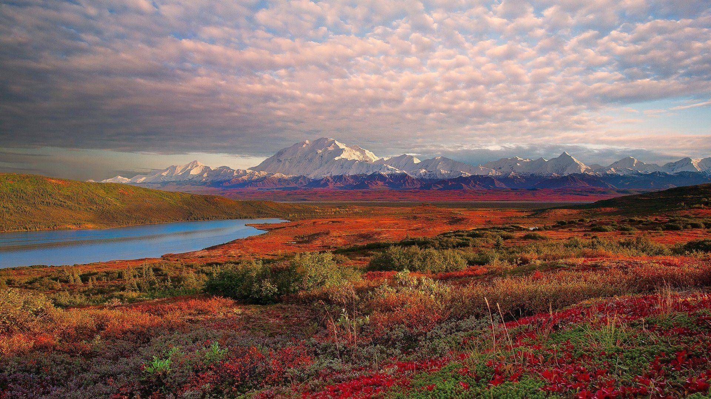
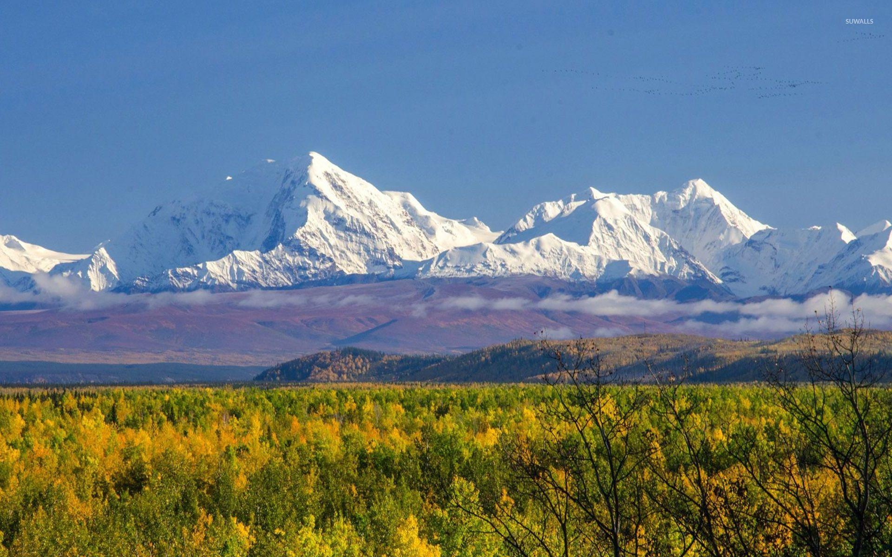
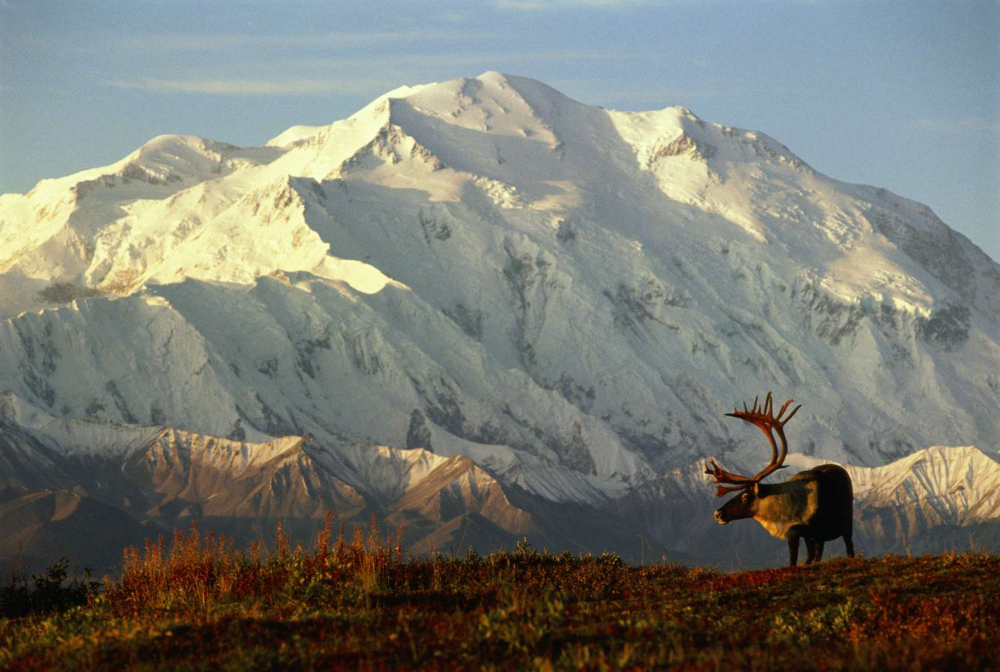
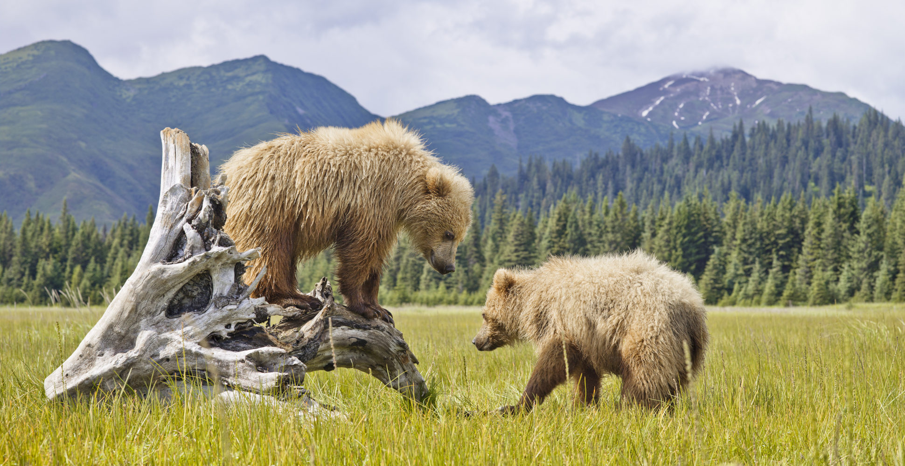
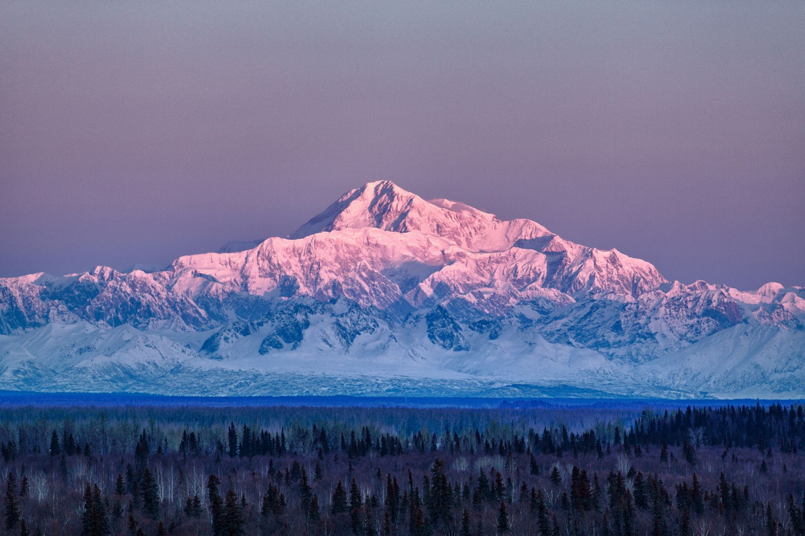

Web Layout
Welcome To
Denali National Park
Alaska





Denali National Park is a place to visit in a lifetime. Inside this 6 million acres of unspoiled land is the mountain Denali (formerly Mt. McKinley), the highest mountain on the North American continent, reaching 20,310 ft (6,190 m). This national park houses different terrains, including tundra, spruce forests, and glaciers, known for being the habitat of grizzly bears, caribou, Dall sheep, moose, and wolves.

There are many things you can do here. For first timers, you can take the guided bus tour along the Denali Park Road while spotting Alaska's Big Five wildlife. Next, you can visit the sled dogs. In the summer, visitors get to watch as the park exercises the dogs. These dogs can run up to 18 mph (28 kph), but they prefer to cruise at about 8 mph (12kph). Here, you can also try panning for gold! Though finding gold itself is considerably rare. But, for a much more priceless adventure, you can hike and camp in the backcountry. Note that you’d need a permit for overnight trips in the wilderness. What’s incredible is that you can encounter wildlife from a closer distance, but still you should stay at a safe distance with them.

For travelers with a high budget, you can ride a plane along the mountains and land on a glacier. With all the sharp, snowy peaks, around the landing site, you WILL be awestruck. Next up, you can learn how to escape a crevasse. Now, if you’re up to step up your adventure, you can climb one of the mountains there. But make sure you are well prepared—in equipment, survival skills, and knowledge. For a more fun activity, you can do dog sledding across the snowy tundra! You can experience not only the ride, but also the process of preparing the dogs. Now, for the most exciting adventure according to Rock the Park, you can bike down the Denali Park Road—at midnight! At midnight, you would spot more wildlife, since they’re more active at that time. Even though it gets even more amazing, you’d need to stay more cautious. The view of Mount Denali from the road will just grab your attention, even from the also beautiful sunset. And your final stop is Wonder Lake. Coming to a place like Denali, you know you’re going to walk away with an amazing experience, as it is one of the most beautiful places on Earth!